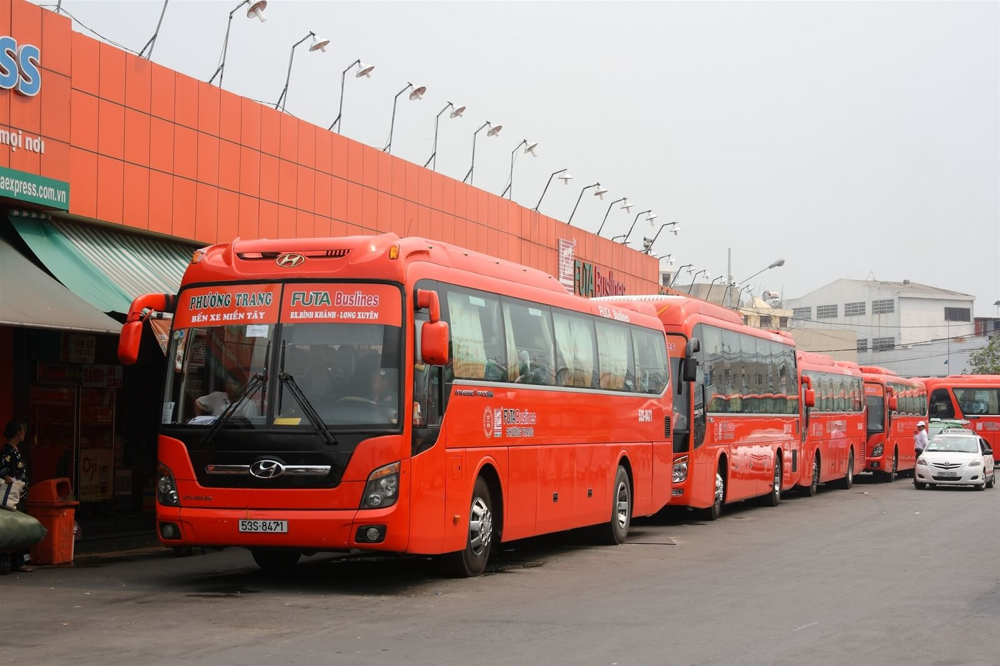
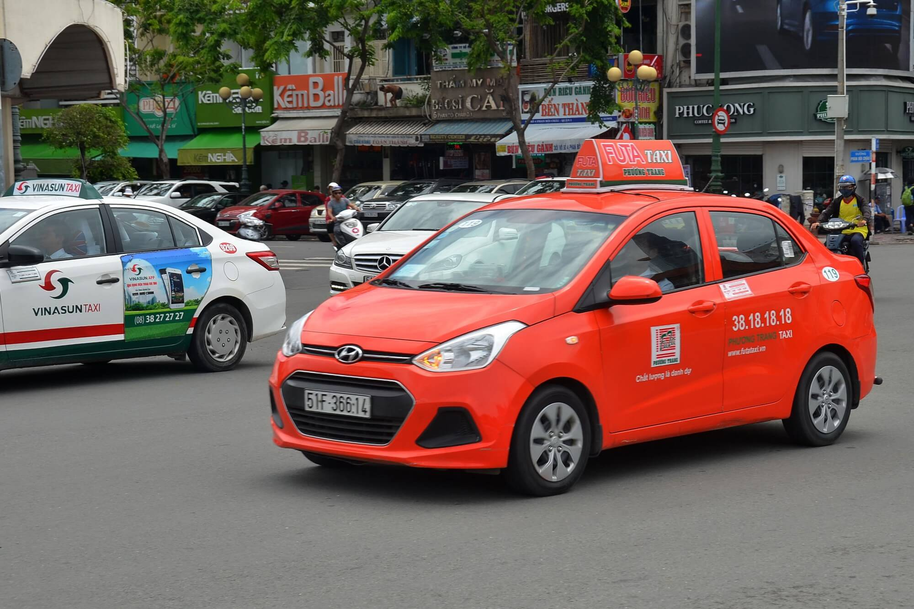
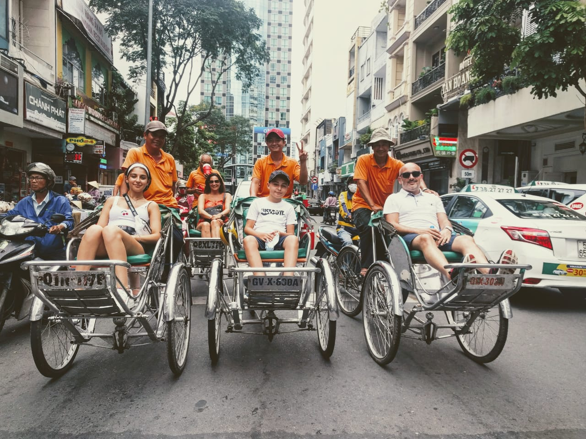

<html>
<head>
       <meta name="viewport" content="width=device-width, initial-scale=1.0">
       <link rel="stylesheet" type="text/css" href="./ToanpdFX15532 phuongtiendilai.css">
</head>
</html>


<header>
       <div id="menu" id="menutable">
              <ul>
                     <li class="limenuleft"><a href="./index.html"> <strong>TRANG CHỦ</strong></a></li>
                     <li class="limenuleft"><a href="./ToanpdFX15532 ASM4 khuyenmai.html"><strong>KHUYẾN MÃI</strong></a></li>
              </ul>

              <ul>
                     <li class="limenuright"><a href="./ToanpdFX15532 phuongtiendilai.html"><strong>XE ĐƯA ĐÓN</strong></a> </li>
                     <li class="limenuright"><a href="./ToanpdFX15532 ASM4 khachsan.html" > <strong>KHÁCH SẠN</strong></a></li>
                     <li class="limenuright"><a href="./ToanpdFX15532 ASM4 nhahang.html"><strong>NHÀ HÀNG</strong></a> </li>
              </ul>
       </div>


       <div id="banner">
              <div class="hinhanh"></div>

              <div class="khung">
                     <div class="chu">
                            <h1><strong>TỔNG HỢP CÁC PHƯƠNG TIỆN ĐI LẠI SÀI GÒN</strong></h1>
                     </div>
              </div>
       </div>
</header>


<body>
       <div id="danhsachanh">

             
              <div class="col-12   col-s-12  col-d-12  box">
                     <h2> XE KHÁCH  </h2>
                     <p>Sài Gòn có hai bến xe chính là bến xe miền Đông và bến xe miền Tây nằm ở hai đầu thành phố tập trung mọi chuyến xe từ các tỉnh thành đổ về. Theo kinh nghiệm du lịch thành phố Hồ Chí Minh thì xe khách là phương án khá “kinh tế” cho các khách du lịch từ miền Trung và Nam Bộ vì giá vé khá rẻ chỉ 200.000 - 400.000VND/người và thời gian di chuyển chừng 8-9 tiếng, lên xe ngủ một giấc là tới nơi rồi.  </p>
                     <p>Thêm vào đó, bạn sẽ không phải ngày đêm “săn” khuyến mại hay đặt vé trước như máy bay, tàu hỏa nên là lựa chọn khá an toàn cho những chuyến đi bất ngờ hoặc không thể sắp xếp được trước thời gian. Một số nhà xe uy tín và có mạng lưới rộng khắp toàn quốc có chất lượng khá tốt là xe Hoàng Long, Phương Trang, Mai Linh, Thành Bưởi, Thesinhtourist,...</p>
                     
              </div>

              <div class=" col-12  col-s-12 col-d-12 box">
                <h2>  Taxi </h2>
                <p>Với đặc trưng thời tiết Sài Gòn nắng nóng quanh năm thì taxi hẳn là lựa chọn hàng đầu khi du lịch thành phố năng động này, vừa tránh nắng, tránh mưa vừa nhanh chóng và tương đối an toàn, lại không lo lạc đường. Không chỉ có taxi truyền thống, dịch vụ đặt xe trực tuyến cũng đang rất thịnh hành và giá thành tiết kiệm hơn, tuy nhiên sẽ khó kiếm tài xế vào các giờ cao điểm.</p>
                <p>Sử dụng taxi làm bạn đồng hành thì bạn nên lựa chọn các hãng xe uy tín, có đồng hồ tính giờ, biển hiệu và thông tin rõ ràng như Mai Linh, Vinasun để không bị chặt chém. Nếu chỉ di chuyển trong khu trung tâm quận 1 thì mức giá không vượt quá 100.000đ/lượt.</p>
                
                     
                     
             </div>

              <div class=" col-12  col-s-12 col-d-12 box">
                <h2> Xích lô </h2>
                <p>Không chỉ Hà Nội hay Huế mới có loại hình này mà ngay tại Sài Gòn hoa lệ bạn cũng có thể sử dụng xích lô để dạo phố, ngắm cảnh. Không chỉ được khách nước ngoài ưa chuộng mà ngay cả khách du lịch trong nước cũng cực kì thích thú với phương tiện đi lại ở Sài Gòn cực độc đáo này. </p>
                <p>Giá xích lô được tính theo giờ, với chi phí khoảng 50.000 - 80.000VNĐ dành cho 2 người và bạn chỉ nên sử dụng xích lô để khám phá khu vực trung tâm quận 1, quanh nhà thờ Đức Bà, dinh Độc Lập và chợ Bến Thành thôi nhé!</p>
                
                     

              </div>
       </div>

</body>


<footer>
       <div id="bangfooter" class="row">

              <div class="col-4 box">

                     <h3>Du lịch</h3>
                     <p>NgoKhong dulich là blogger chuyên viết về du lịch đã được 3 năm, rất hân được dẫn dắt các bạn trên hành trình khám phá Việt Nam</p>
                     <p class="link"><ins> Facebook của mình </ins></p>

              </div>

              <div class=" col-4   box">

                     <h3>Cộng đồng</h3>
                     <p> Cộng đồng của mình sẽ hỗ trợ bạn trên mọi nẻo đường, mong bạn đừng lo lắng và tận hưởng cuộc hành trình của mình</p>
                     <p class="link"><ins>Cộng đồng của mình</ins></p>

              </div>

              

       </div>
</footer>